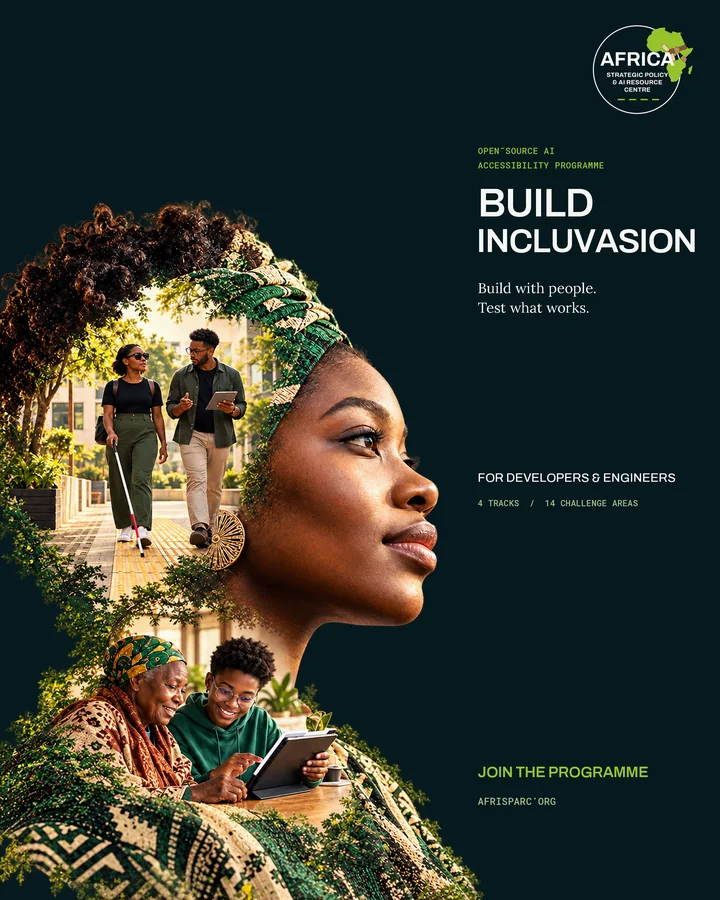
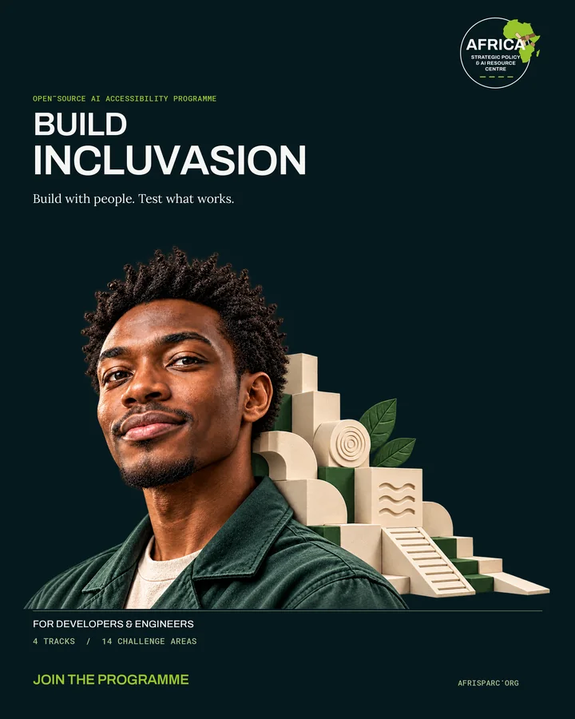
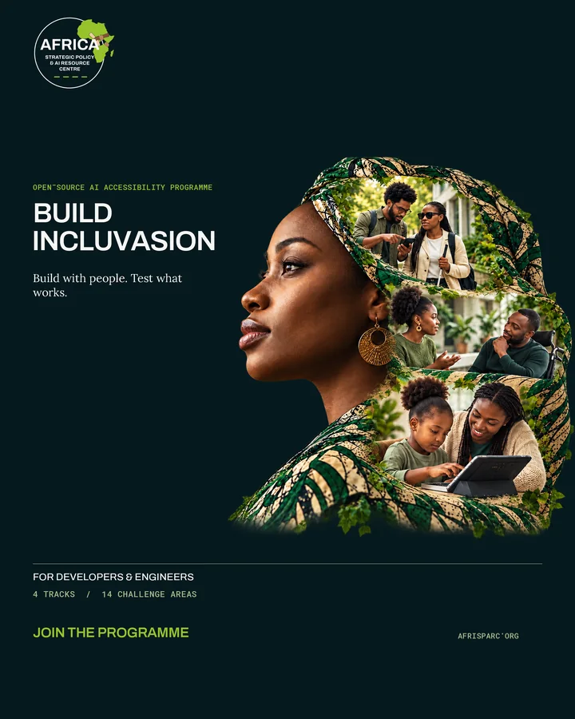
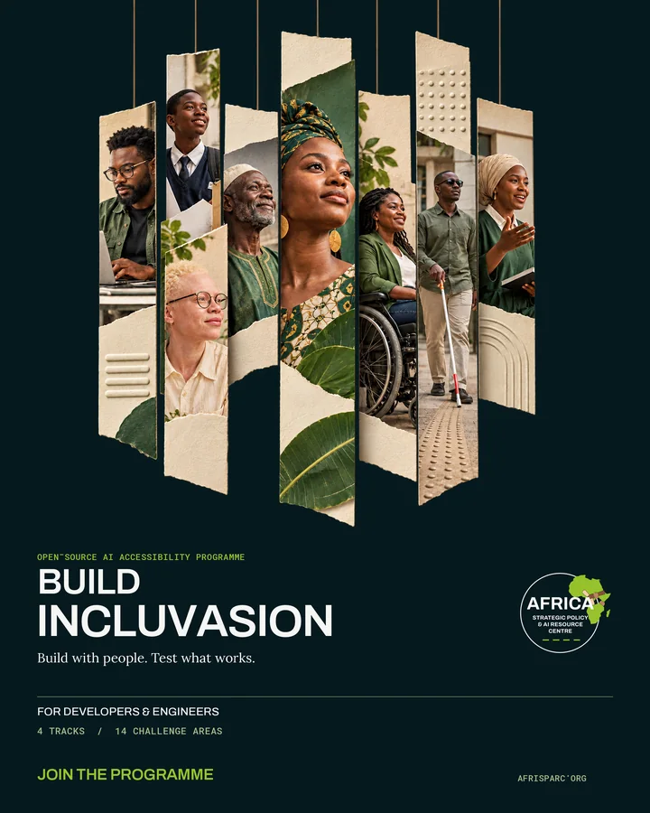
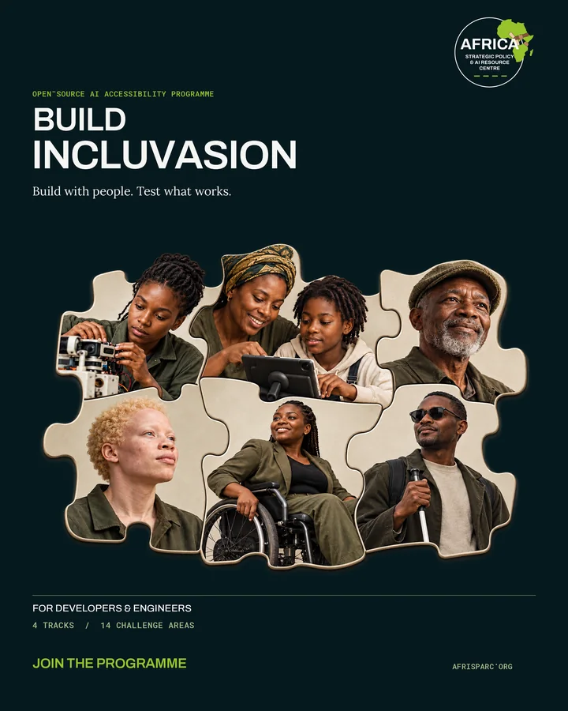
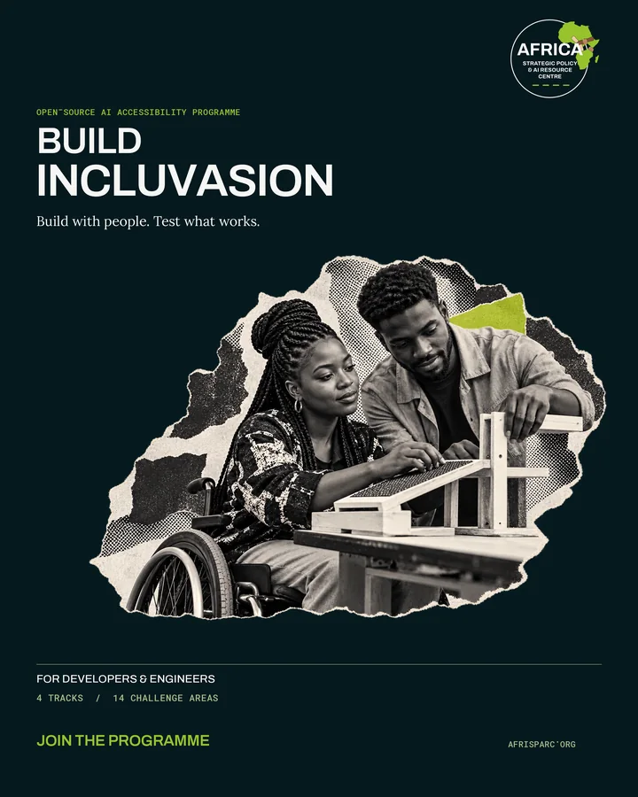
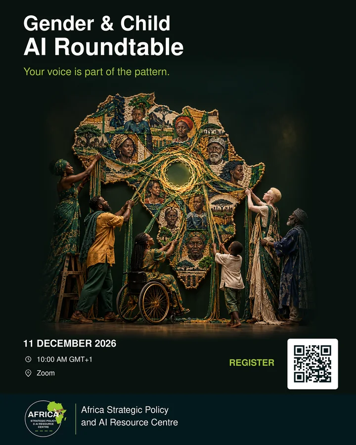
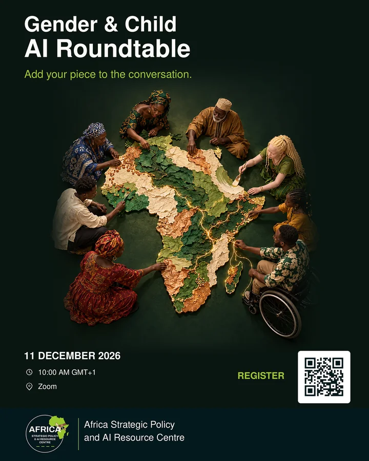
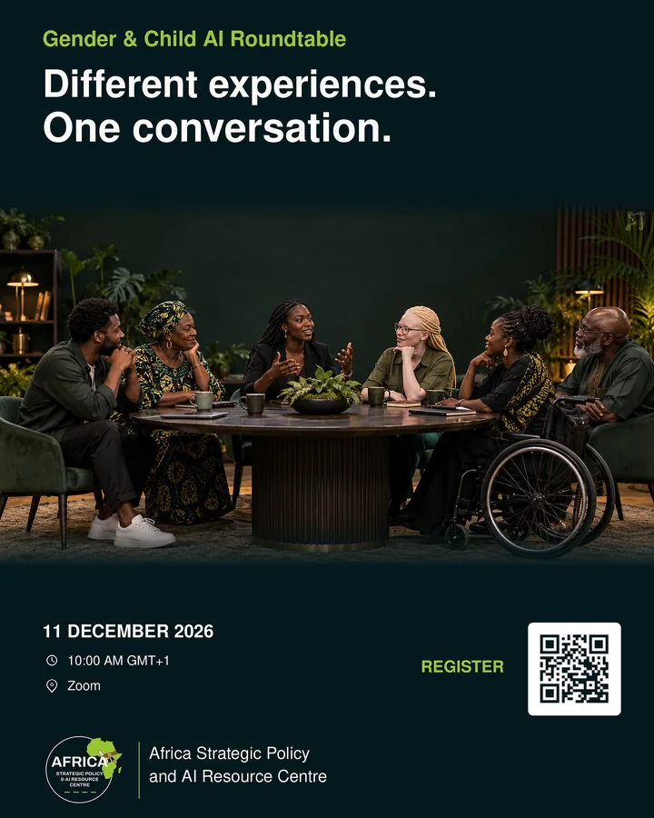
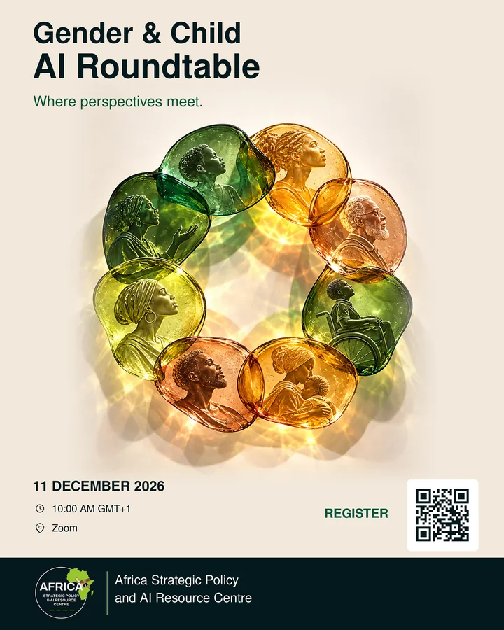

Volunteer work
Five roles across national AI policy, red teaming, AI talent and community programmes, and the fellowships behind them.
At a glance
Red-teams models such as ChatGPT across domains and leads curriculum for the AI Engineering and Governance Programme.
Writes adversarial financial services scenarios and the workbook other writers use to extend the library.
Designed control structures and risk frameworks aligned to the national AI strategy.
Ran a two-week programme for 69 participants, with 8 companies attending.
Evaluated builds from early-career AI talent.
Millennium Fellow, McKinsey Forward Fellow and Moonshot Borderless Top 20.
As an Artificial Intelligence Action Fellow in policy and governance, I helped develop Kenya's first ever Artificial Intelligence Opportunities Plan, designing operational control structures and risk frameworks aligned to the Kenya National Artificial Intelligence Strategy for 2025 to 2030. The work ran across policy, technical, and civil-society stakeholders.
Operational control structures and risk frameworks, written to be usable by the institutions that would have to apply them.
The Kenya National Artificial Intelligence Strategy for 2025 to 2030.
Writing controls for a country is the same discipline as writing gates for a system, at a scale where getting it wrong is expensive.
Technical artificial intelligence safety research, red-teaming models such as ChatGPT across multiple domains. I lead curriculum development for the AI Engineering and Governance Programme, reshaped the organisation's artificial intelligence branding strategy, and helped build a system that detects AI-generated content and remediates the misinformation it spreads.
I write adversarial scenarios for financial services that probe model failure modes, bias, and misuse, and I am turning the challenge taxonomy into a workbook so other writers can build out the library. It is audit-style risk thinking applied to model behaviour, and it is where I learned to design a test a system cannot pass by being agreeable.
Judged Tana's first artificial intelligence hackathon, evaluating builds from early-career artificial intelligence talent.
Jim Leech Mastercard Foundation Fellow at Queen's University, 2022 to 2023. Millennium Fellow and McKinsey Forward Fellow, 2022. Moonshot Borderless Top 20.
Afri-SPARC · design work
A selection of the posters I made as part of reshaping Afri-SPARC's AI branding strategy: a series for Build Incluvasion, the organisation's open-source AI accessibility programme for developers and engineers, and a series for its Gender & Child AI Roundtable.










Programmes run with outside partners
Ran a two-week programme for 69 participants from campuses across Kenya, with 8 companies attending, including CIC Insurance and Post Bank.
Led marketing, external relations, logistics, and delegate experience. Secured a collaboration with Calabar University in Nigeria, split the product into learning series for different audiences, and recruited 6 members with 67%+ retention.
Raised budget implementation by 18% and generated 54% of projected income in the first quarter of service.
Led a team of 8 to 5 national awards, including Best Local Chapter in Kenya, first of eleven, and led recruitment across 3 satellite campuses.